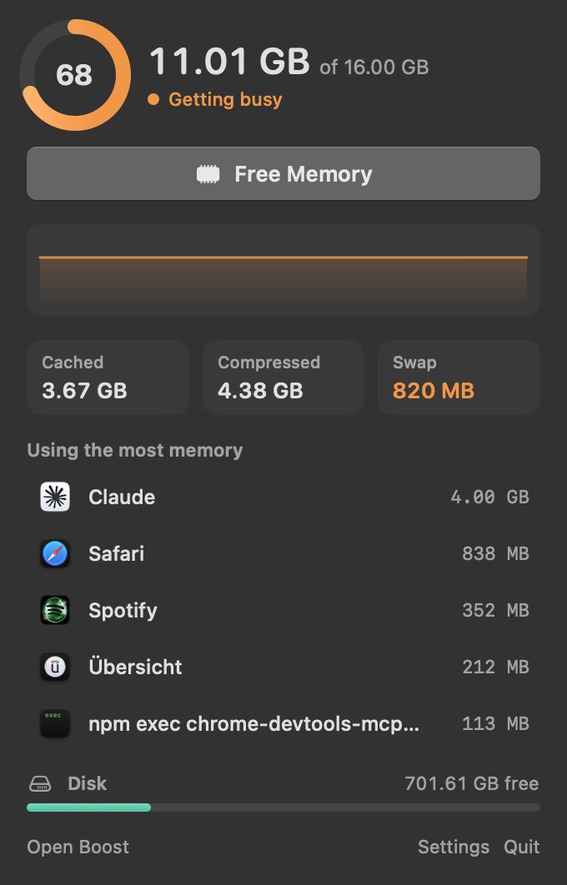
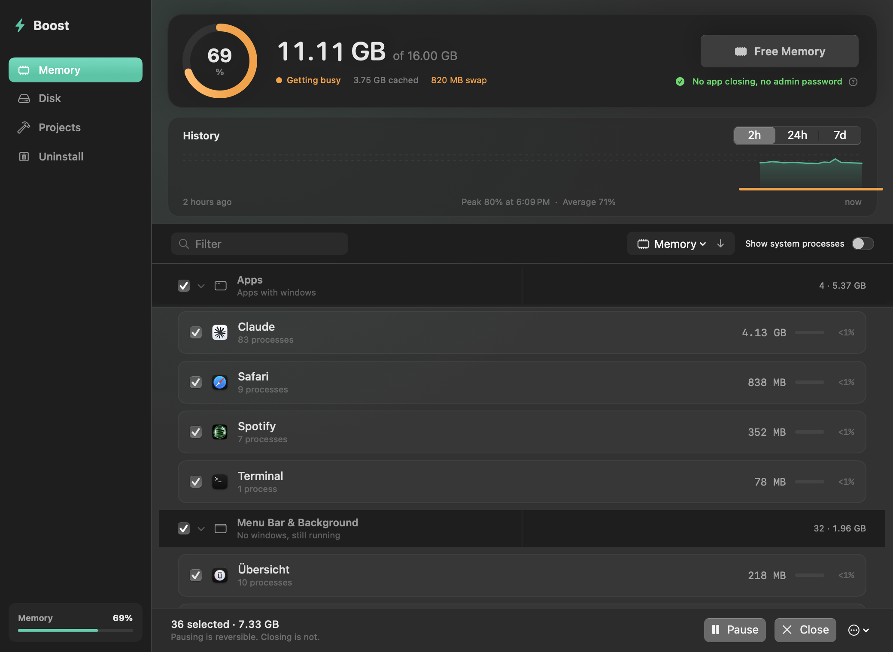
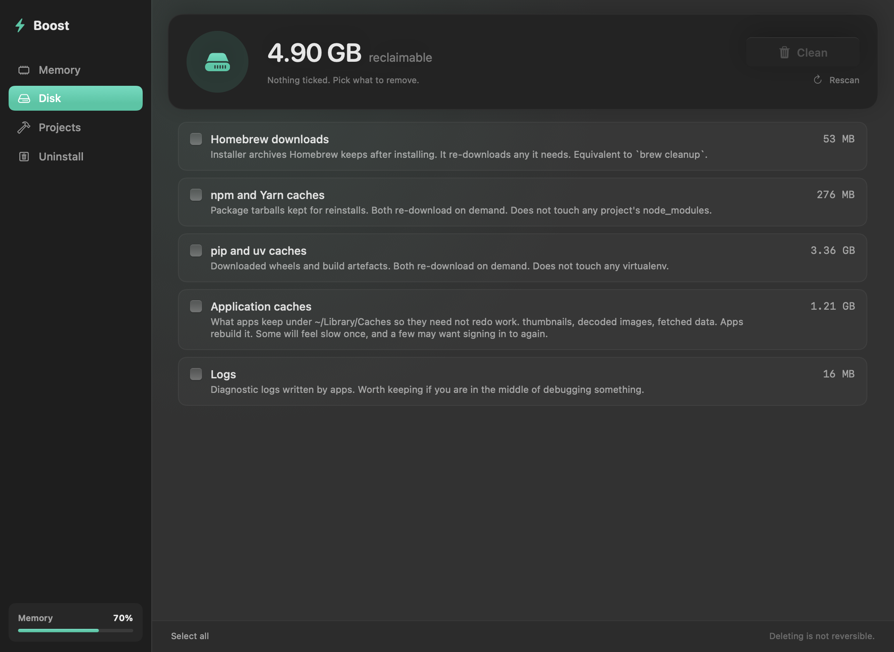
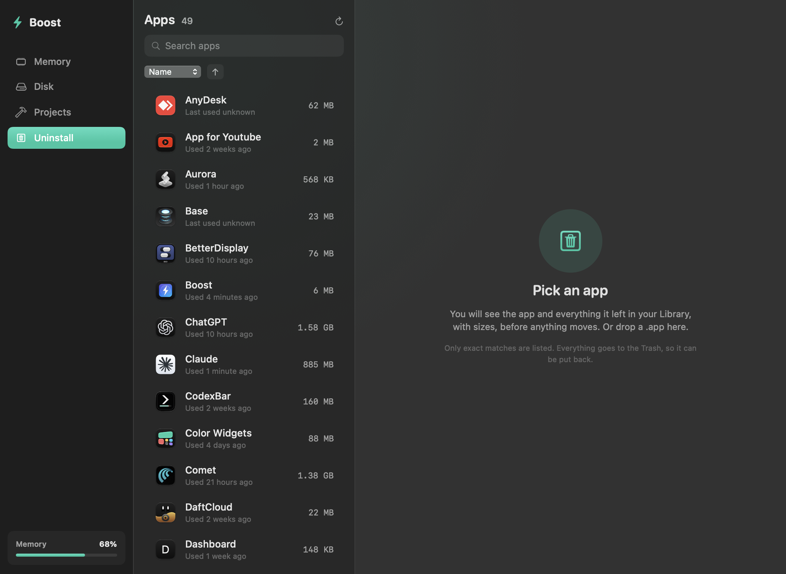

Boost is a free, open source menu bar app. It shows memory pressure and history, pauses apps you are not using, and cleans up caches and leftovers without touching anything risky.
brew install --cask kernel-hunter/boost/boostmacOS 14 or later. Apple Silicon and Intel. No account, no network access, no subscription.

The parts of the paid Mac utilities that most people use, in one small app.
Pressure, swap, cached and compressed memory, and your five biggest apps. Pause or quit one without opening a window.
A reading every minute, kept for a week. Chart it over 2 hours, 24 hours or 7 days and see when your Mac started swapping.
Freeze an app and its helpers. It uses no CPU and returns exactly where you left it. Choose apps to pause on their own when idle.
A notice when swap passes 1, 2 or 4 GB, or when memory stays tight for a minute, with the app responsible.
Rebuildable caches only. Downloads, iOS backups and anything behind a privacy prompt are left alone. Nothing is ticked for you.
Find old node_modules and build folders. Remove an app along with the files it left in your Library. Both go to the Trash.
These are the actual views, rendered from the app.



Most cleaners make a big number smaller. Boost explains what the number means first.
| Typical cleaner | Boost |
|---|---|
| Shows cached memory as a problem | Shows it as available, because macOS gives it back on demand |
| Always has something to clean | Tells you when there is nothing to do |
| Ticks everything for you | Ticks nothing |
| Deletes permanently | Moves to the Trash, except the Disk tab, which says so |
| Wants an account and a subscription | Free, GPL-3.0, no network access at all |
Homebrew is the easiest way. You can also build it from source, which takes about a minute.
git clone https://github.com/Kernel-Hunter/boost.git && cd boost && ./Scripts/build.shAbout signing. Boost is signed with a local certificate and is not notarized, because that needs a paid Apple Developer account. The Homebrew cask and a source build both avoid the Gatekeeper warning. If you download the zip by hand, right-click the app and choose Open.